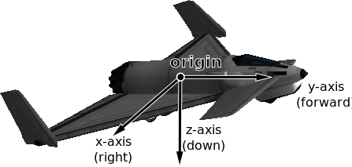
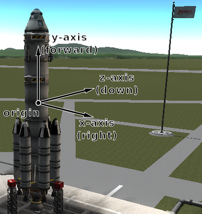
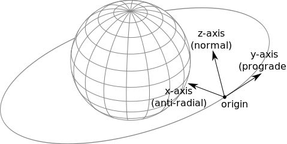
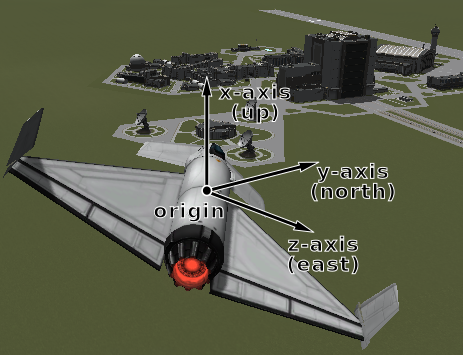
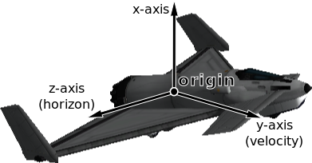

Vessel¶
-
class
Vessel¶ These objects are used to interact with vessels in KSP. This includes getting orbital and flight data, manipulating control inputs and managing resources.
-
std::string
name()¶
-
void
set_name(std::string value)¶ The name of the vessel.
-
SpaceCenter::VesselType
type()¶
-
void
set_type(SpaceCenter::VesselType value)¶ The type of the vessel.
-
SpaceCenter::VesselSituation
situation()¶ The situation the vessel is in.
-
double
met()¶ The mission elapsed time in seconds.
-
SpaceCenter::Flight
flight(SpaceCenter::ReferenceFrame reference_frame = None)¶ Returns a
SpaceCenter::Flightobject that can be used to get flight telemetry for the vessel, in the specified reference frame.Parameters: - reference_frame – Reference frame. Defaults to the vessel’s surface reference frame (
SpaceCenter::Vessel::surface_reference_frame()).
Note
When this is called with no arguments, the vessel’s surface reference frame is used. This reference frame moves with the vessel, therefore velocities and speeds returned by the flight object will be zero. See the reference frames tutorial for examples of getting the orbital speed and surface speed of a vessel.
- reference_frame – Reference frame. Defaults to the vessel’s surface reference frame (
-
SpaceCenter::Vessel
target()¶
-
void
set_target(SpaceCenter::Vessel value)¶ The target vessel.
NULLif there is no target. When setting the target, the target cannot be the current vessel.
-
SpaceCenter::Orbit
orbit()¶ The current orbit of the vessel.
-
SpaceCenter::Control
control()¶ Returns a
SpaceCenter::Controlobject that can be used to manipulate the vessel’s control inputs. For example, its pitch/yaw/roll controls, RCS and thrust.
-
SpaceCenter::AutoPilot
auto_pilot()¶ An
SpaceCenter::AutoPilotobject, that can be used to perform simple auto-piloting of the vessel.
-
SpaceCenter::Resources
resources()¶ A
SpaceCenter::Resourcesobject, that can used to get information about resources stored in the vessel.
-
SpaceCenter::Resources
resources_in_decouple_stage(int32_t stage, bool cumulative = True)¶ Returns a
SpaceCenter::Resourcesobject, that can used to get information about resources stored in a given stage.Parameters: - stage – Get resources for parts that are decoupled in this stage.
- cumulative – When
false, returns the resources for parts decoupled in just the given stage. Whentruereturns the resources decoupled in the given stage and all subsequent stages combined.
Note
For details on stage numbering, see the discussion on Staging.
-
SpaceCenter::Parts
parts()¶ A
SpaceCenter::Partsobject, that can used to interact with the parts that make up this vessel.
-
SpaceCenter::Comms
comms()¶ A
SpaceCenter::Commsobject, that can used to interact with RemoteTech for this vessel.Note
Requires RemoteTech to be installed.
-
float
mass()¶ The total mass of the vessel, including resources, in kg.
-
float
dry_mass()¶ The total mass of the vessel, excluding resources, in kg.
-
float
thrust()¶ The total thrust currently being produced by the vessel’s engines, in Newtons. This is computed by summing
SpaceCenter::Engine::thrust()for every engine in the vessel.
-
float
available_thrust()¶ Gets the total available thrust that can be produced by the vessel’s active engines, in Newtons. This is computed by summing
SpaceCenter::Engine::available_thrust()for every active engine in the vessel.
-
float
max_thrust()¶ The total maximum thrust that can be produced by the vessel’s active engines, in Newtons. This is computed by summing
SpaceCenter::Engine::max_thrust()for every active engine.
-
float
max_vacuum_thrust()¶ The total maximum thrust that can be produced by the vessel’s active engines when the vessel is in a vacuum, in Newtons. This is computed by summing
SpaceCenter::Engine::max_vacuum_thrust()for every active engine.
-
float
specific_impulse()¶ The combined specific impulse of all active engines, in seconds. This is computed using the formula described here.
-
float
vacuum_specific_impulse()¶ The combined vacuum specific impulse of all active engines, in seconds. This is computed using the formula described here.
-
float
kerbin_sea_level_specific_impulse()¶ The combined specific impulse of all active engines at sea level on Kerbin, in seconds. This is computed using the formula described here.
-
SpaceCenter::ReferenceFrame
reference_frame()¶ The reference frame that is fixed relative to the vessel, and orientated with the vessel.
- The origin is at the center of mass of the vessel.
- The axes rotate with the vessel.
- The x-axis points out to the right of the vessel.
- The y-axis points in the forward direction of the vessel.
- The z-axis points out of the bottom off the vessel.
Vessel reference frame origin and axes for the Aeris 3A aircraft
Vessel reference frame origin and axes for the Kerbal-X rocket
-
SpaceCenter::ReferenceFrame
orbital_reference_frame()¶ The reference frame that is fixed relative to the vessel, and orientated with the vessels orbital prograde/normal/radial directions.
- The origin is at the center of mass of the vessel.
- The axes rotate with the orbital prograde/normal/radial directions.
- The x-axis points in the orbital anti-radial direction.
- The y-axis points in the orbital prograde direction.
- The z-axis points in the orbital normal direction.
Note
Be careful not to confuse this with ‘orbit’ mode on the navball.
Vessel orbital reference frame origin and axes
-
SpaceCenter::ReferenceFrame
surface_reference_frame()¶ The reference frame that is fixed relative to the vessel, and orientated with the surface of the body being orbited.
- The origin is at the center of mass of the vessel.
- The axes rotate with the north and up directions on the surface of the body.
- The x-axis points in the zenith direction (upwards, normal to the body being orbited, from the center of the body towards the center of mass of the vessel).
- The y-axis points northwards towards the astronomical horizon (north, and tangential to the surface of the body – the direction in which a compass would point when on the surface).
- The z-axis points eastwards towards the astronomical horizon (east, and tangential to the surface of the body – east on a compass when on the surface).
Note
Be careful not to confuse this with ‘surface’ mode on the navball.
Vessel surface reference frame origin and axes
-
SpaceCenter::ReferenceFrame
surface_velocity_reference_frame()¶ The reference frame that is fixed relative to the vessel, and orientated with the velocity vector of the vessel relative to the surface of the body being orbited.
- The origin is at the center of mass of the vessel.
- The axes rotate with the vessel’s velocity vector.
- The y-axis points in the direction of the vessel’s velocity vector, relative to the surface of the body being orbited.
- The z-axis is in the plane of the astronomical horizon.
- The x-axis is orthogonal to the other two axes.
Vessel surface velocity reference frame origin and axes
-
std::tuple<double, double, double>
position(SpaceCenter::ReferenceFrame reference_frame)¶ Returns the position vector of the center of mass of the vessel in the given reference frame.
Parameters:
-
std::tuple<double, double, double>
velocity(SpaceCenter::ReferenceFrame reference_frame)¶ Returns the velocity vector of the center of mass of the vessel in the given reference frame.
Parameters:
-
std::tuple<double, double, double, double>
rotation(SpaceCenter::ReferenceFrame reference_frame)¶ Returns the rotation of the center of mass of the vessel in the given reference frame.
Parameters:
-
std::tuple<double, double, double>
direction(SpaceCenter::ReferenceFrame reference_frame)¶ Returns the direction in which the vessel is pointing, as a unit vector, in the given reference frame.
Parameters:
-
std::tuple<double, double, double>
angular_velocity(SpaceCenter::ReferenceFrame reference_frame)¶ Returns the angular velocity of the vessel in the given reference frame. The magnitude of the returned vector is the rotational speed in radians per second, and the direction of the vector indicates the axis of rotation (using the right hand rule).
Parameters:
-
std::string
-
enum struct
VesselType¶ See
SpaceCenter::Vessel::type().-
enumerator
ship¶ Ship.
-
enumerator
station¶ Station.
-
enumerator
lander¶ Lander.
-
enumerator
probe¶ Probe.
-
enumerator
rover¶ Rover.
-
enumerator
base¶ Base.
-
enumerator
debris¶ Debris.
-
enumerator
-
enum struct
VesselSituation¶ See
SpaceCenter::Vessel::situation().-
enumerator
docked¶ Vessel is docked to another.
-
enumerator
escaping¶ Escaping.
-
enumerator
flying¶ Vessel is flying through an atmosphere.
-
enumerator
landed¶ Vessel is landed on the surface of a body.
-
enumerator
orbiting¶ Vessel is orbiting a body.
-
enumerator
pre_launch¶ Vessel is awaiting launch.
-
enumerator
splashed¶ Vessel has splashed down in an ocean.
-
enumerator
sub_orbital¶ Vessel is on a sub-orbital trajectory.
-
enumerator